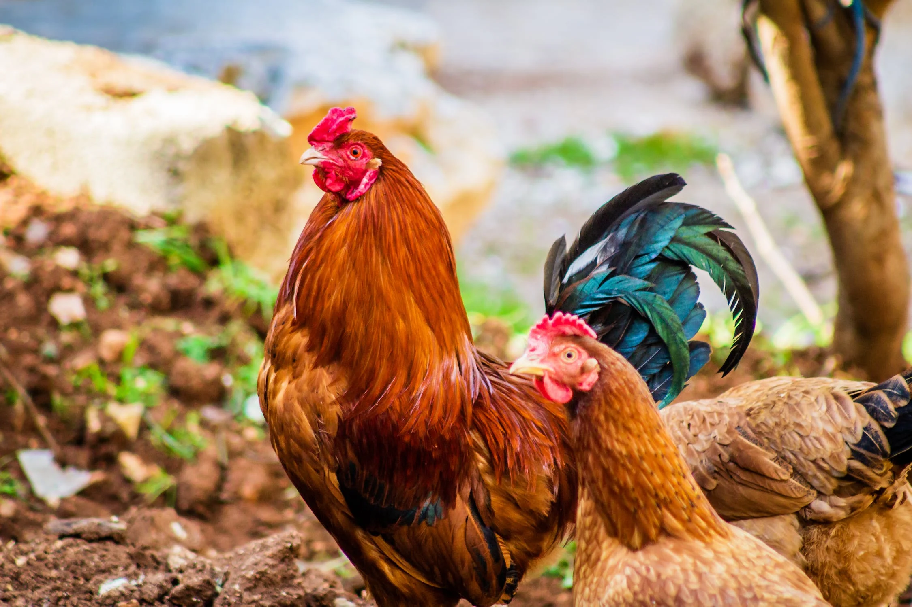

Emi, Ramona, Beto, and Kalhua are the dynamic quartet of playful pups under the watchful care of their dedicated pet sitter. With boundless energy and mischievous antics, these four furry friends keep their sitter on their toes. As they frolic and explore under their sitter's attentive eye, their unique personalities shine, creating a vibrant tapestry of canine companionship.
Oli the dog and Susy the cat are inseparable companions, deeply bonded to each other and their beloved human. When their humans embark on their travels, these devoted pets require extra care and attention to ease their separation anxiety. Despite missing their humans, Oli and Susy find solace in each other's company, their unwavering affection serving as a source of comfort during their time apart.


Nugget, Patty, and Sombrero, the charming trio of chickens, bring a touch of rural charm to their pet sitter's care. When their humans embark on journeys, Nugget, Patty, and Sombrero require special attention and care to ensure their unique needs are met, allowing them to continue their delightful antics and brighten every moment with their presence.